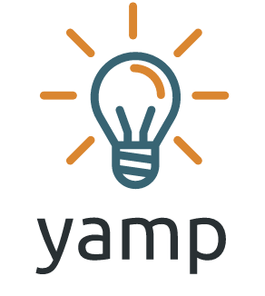

YAMP

Bu liste biraz kalabalık. Hem 10'u aşkın yılkdır kod yazıyorum hem de çocukluğumdan beri bir şeyler inşa etmekten yaratıcılığını kullanmaktan çok keyif alan biriyim. Arkadaşlar artık YAMP (Yet Another Mirat Project) diyorlar yaptığım işlere. Ben de baya seviyorum bu ismi :)Kaydet
Kendi ihtiyaçlarım için yazdığım basit bir günlük tutma betiği. İlk olarak kendi ihtiyacımı görsün diye 2016 yılında yazdım, 2023 yılında Python pakedi haline getirdim:
İnternet Güzeldir
Basitçe Google Drive üzerinde duran bir Excel dosyasını veri kaynağı olarak kullanarak kategorize edilmiş linkler sitesi (web dizini) üreten bir Python betiği, ve bu betikle birlikte üretilmiş web sitesi.
Eleman
Şirketiniz ya da organizasyonunuz için bir iş ilanı listesi oluşturup yayınlamak istediğinizde kullanabileceğiniz, bağımlılığı son derece az, veritabanı olarak airtable kullanan, kolayca kurulabilen (dockerize) ve hızlı çalışan tamamen white label iş ilanı sitesi.
Resm.in
Sorulara fotoğraf çekerek cevap verilen soru cevap sitesiydi. Çekmecende ne var? ya da Çocukluktan kalma vesikalığın var mı? gibi sorulara fotoğraf çekip yolluyorduk. Eğlencenin yanında yemek tarifleri ve Kendin Yap (DIY) tarzı foto hikayelere de ev sahipliği yapıyordu. Python ve Django ile yazmıştım, veritabanı olarak MySql ve Redis kullanıyordu. Bunun haricinde bir kaç yerde Backbone.js kullanmıştım.
Linkfloyd
İnsanlar yerine konuları takip ettiğiniz, aynı ilgi alanına sahip insanları bir araya getirme niyetinde olan, paylaşım ve yer imleme servisiydi. Türkiye'nin Reddit gibi bir topluluğa sahip olması gerektiğini düşündüğüm için kalkışmıştım bu işe. Kendi içinde güzel bir topluluğu oluştu zamanla, şu an hala konuştuğum bir çok güzel insanla tanıştım sayesinde. Python ve Django kullanarak yazmıştım. Veritabanı olarak Mysql ve Redis kullanıyordu.
Bavula Ne Koysam?
Seyahate çıkarken bavula koyulacaklar listesi hazırlamanızı kolaylaştıracak basit web uygulaması. Şu an hala yayında. Appengine ile yazdım kendisini bunu bir ara tekrar sadece frontend içerisinde çalışacak şekilde tekrar yazmak istiyorum.
Filika
FriendFeed'in kapanmasına yakın hesapların yedeğinin alınabilmesi için yazdığım terminal uygulaması. Hesaba ait bütün paylaşılmış imaj ve mp3'leri de indiriyordu. İndiren herkesin bilgisayarında çalışabilmesi için de standart Python kütüphanelerinden dışarı çıkmamıştım. Friendfeed kapatıldığı için artık işe yaramıyor ama API ve download işleri ile ilgilenenler inceleyebilir.
FFAnony
İnsanlara FriendFeed üzerindeki FFAnony adlı hesabı kullanarak anonim gönderi yapma imkanı veren web servisiydi. FriendFeed'in açık olduğu zamanlarda bir gecelik proje olarak yapmıştım. Çeşitli sataşmalar, ilanı aşklar, hakaretler, flörtler ve /r/gonewild/ türevi fotoğraf paylaşımlarına ev sahipliği yaptı. Bizim insanımız gıybet seviyor tabi baya popüler olmuştu.